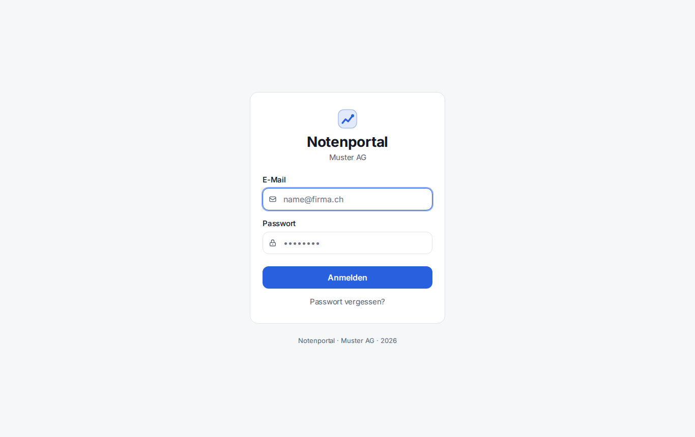
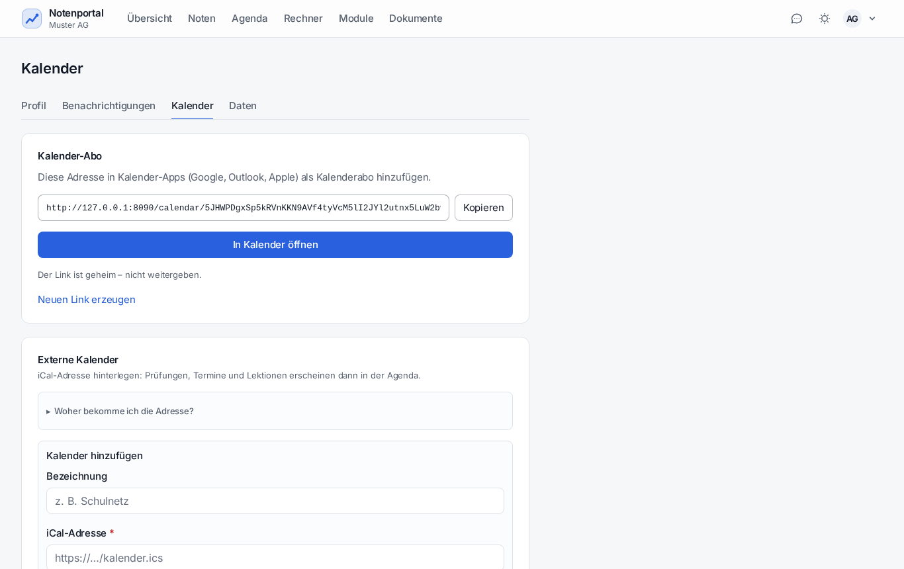

Es gibt keine Client-Software. Ein Browser genügt.
| Punkt | Wert |
|---|---|
| Software | Keine Installation, kein Agent, kein Plug-in |
| Browser | Chrome, Edge, Firefox oder Safari in aktueller Version; JavaScript aktiv |
| Bildschirm | Ab 390 Pixel Breite bedienbar – Handy, Tablet, Notebook |
| Netz | Zugang zum Lab-Netz; Adresse http://172.26.14.101 (bzw. https://) |
| Zugang | E-Mail-Adresse und Startpasswort vom Admin; beim ersten Login ist ein eigenes Passwort Pflicht |

Das Portal ist eine PWA – es lässt sich wie eine App auf den Startbildschirm legen und startet dann ohne Adresszeile.
| Gerät | Weg |
|---|---|
| Windows, Chrome/Edge | Adresszeile → Symbol «Installieren» bzw. Menü → Apps → «Diese Seite als App installieren» |
| Android | Menü → «Zum Startbildschirm hinzufügen» |
| iPhone / iPad, Safari | Teilen → «Zum Home-Bildschirm» |
Ohne Verbindung erscheint eine Offline-Seite. Zwischengespeichert werden nur Programmdateien und Symbole – nie Noten oder andere Personendaten. Beim Abmelden leert die App ihren Zwischenspeicher.
Im Lab gibt es keinen öffentlichen DNS-Namen und darum kein Let's-Encrypt-Zertifikat. Das Portal benutzt eine eigene Zertifizierungsstelle. Ohne deren Zertifikat warnt der Browser «Nicht sicher» – die Verbindung ist trotzdem verschlüsselt.
| System | Weg |
|---|---|
| Windows | certmgr.msc → «Vertrauenswürdige Stammzertifizierungsstellen» → Importieren |
| macOS | Schlüsselbundverwaltung → System → Zertifikat hineinziehen → «Immer vertrauen» |
| Firefox | Einstellungen → Zertifikate → Zertifizierungsstellen → Importieren |
Die Datei heisst ca.crt und liegt auf dem Server unter /etc/ssl/notenportal/.
Nur diese Datei wird verteilt – ca.key bleibt auf dem Server.
Jede Person kann ihre Prüfungstermine im eigenen Kalenderprogramm sehen. Den Link liefert Einstellungen → Kalender; er enthält ein persönliches Token und lässt sich dort auch neu erzeugen.

| Programm | Weg |
|---|---|
| Outlook | Kalender hinzufügen → «Aus dem Internet abonnieren» → Link einfügen |
| Google Kalender | Weitere Kalender → «Per URL» → Link einfügen |
| Apple Kalender | Ablage → «Neues Kalenderabonnement» → Link einfügen |